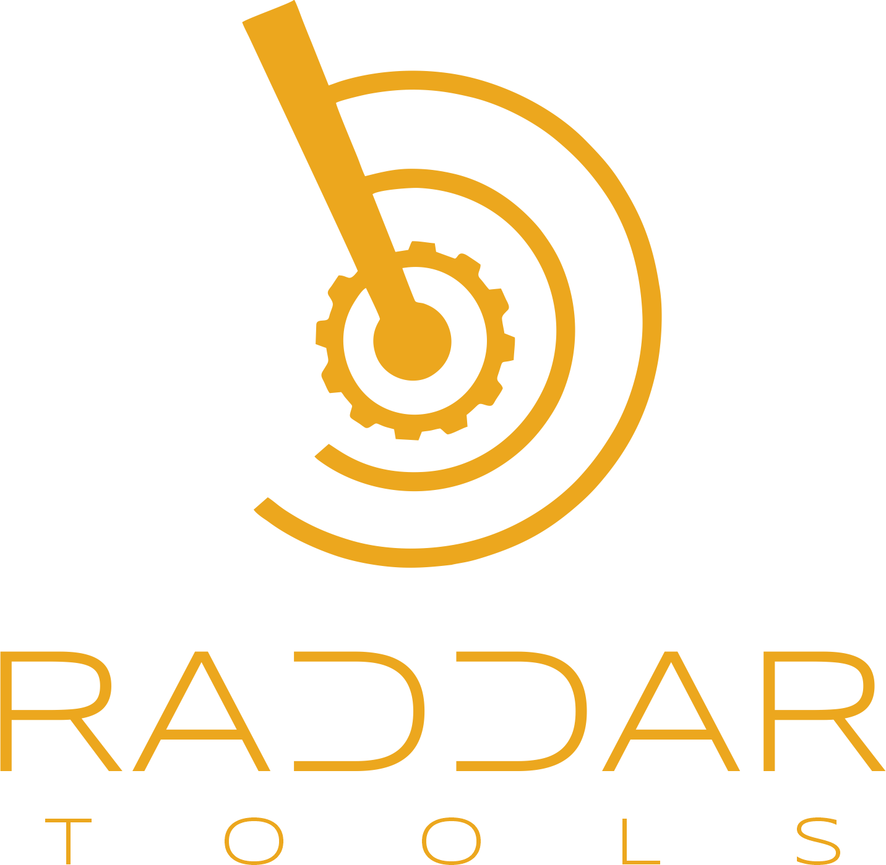

<!DOCTYPE html>
<html lang="pt-BR">
<head>
    <meta charset="UTF-8">
    <meta name="viewport" content="width=device-width, initial-scale=1.0">
    <title>RaddarTools - Do Conceito à Solução Digital com Engenharia de IA</title>
    <link rel="preconnect" href="https://fonts.googleapis.com">
    <link rel="preconnect" href="https://fonts.gstatic.com" crossorigin>
    <link href="https://fonts.googleapis.com/css2?family=Roboto:wght@300;400;700&family=Orbitron:wght@400;700&display=swap" rel="stylesheet">
    <!-- Font Awesome for icons -->
    <link rel="stylesheet" href="https://cdnjs.cloudflare.com/ajax/libs/font-awesome/6.0.0-beta3/css/all.min.css" integrity="sha512-Fo3rlrZj/k7ujTnHg4CGR2D7kSs0v4LLanw2qksYuMGFHzW7W3m6R8z3kQy1L4G0tI7E5yR5h9z0p8/T+H4P6w==" crossorigin="anonymous" referrerpolicy="no-referrer" />
    <style>
        :root {
            --primary-color: #00bcd4; /* Cyan - inspired by modern tech, energetic */
            --secondary-color: #673ab7; /* Deep Purple - sophistication, intelligence */
            --accent-color: #ffeb3b; /* Amber - warning, highlights, energy */
            --text-color: #e0e0e0; /* Light gray for readability */
            --background-dark: #1a1a2e; /* Dark blue-purple - deep tech, night sky */
            --background-light: #2e3b55; /* Slightly lighter dark - content background */
            --border-color: rgba(255, 255, 255, 0.1);
            --font-main: 'Roboto', sans-serif;
            --font-display: 'Orbitron', sans-serif;
        }

        * {
            margin: 0;
            padding: 0;
            box-sizing: border-box;
        }

        body {
            font-family: var(--font-main);
            color: var(--text-color);
            background-color: var(--background-dark);
            line-height: 1.6;
            scroll-behavior: smooth;
        }

        a {
            color: var(--primary-color);
            text-decoration: none;
            transition: color 0.3s ease;
        }

        a:hover {
            color: var(--accent-color);
        }

        #root {
            display: flex;
            flex-direction: column;
            min-height: 100vh;
        }

        header {
            background-color: var(--background-light);
            padding: 1.5rem 2rem;
            display: flex;
            justify-content: space-between;
            align-items: center;
            border-bottom: 1px solid var(--border-color);
            position: sticky;
            top: 0;
            z-index: 1000;
            box-shadow: 0 4px 10px rgba(0, 0, 0, 0.3);
        }

        .logo {
            display: flex;
            align-items: center;
            font-family: var(--font-display);
            font-size: 1.8rem;
            font-weight: 700;
            color: var(--primary-color);
            text-shadow: 0 0 8px var(--primary-color);
        }

        .logo img {
            height: 80px;
            margin-right: 10px;
            filter: drop-shadow(0 0 5px var(--primary-color));
        }

        nav ul {
            display: flex;
            list-style: none;
        }

        nav li {
            margin-left: 2.5rem;
            position: relative;
        }

        nav a {
            font-family: var(--font-display);
            font-size: 1.1rem;
            font-weight: 400;
            color: var(--text-color);
            text-transform: uppercase;
            padding: 0.5rem 0;
            position: relative;
            transition: all 0.3s ease;
        }

        nav a::after {
            content: '';
            position: absolute;
            left: 0;
            bottom: 0;
            width: 0;
            height: 2px;
            background-color: var(--primary-color);
            transition: width 0.3s ease;
        }

        nav a:hover::after,
        nav a.active::after {
            width: 100%;
        }

        nav a.active {
            color: var(--primary-color);
            text-shadow: 0 0 5px var(--primary-color);
        }

        .language-switcher {
            display: flex;
            gap: 10px;
            position: absolute;
            right: 2rem;
            top: 4rem;
            z-index: 1001; /* Ensure it's above other header elements if needed */
        }

        .language-switcher img {
            width: 30px;
            height: 20px;
            cursor: pointer;
            border: 1px solid rgba(255, 255, 255, 0.3);
            border-radius: 3px;
            transition: all 0.2s ease;
            filter: grayscale(80%);
            box-shadow: 0 0 5px rgba(0, 0, 0, 0.3);
        }

        .language-switcher img:hover {
            filter: grayscale(0%);
            transform: scale(1.1);
            border-color: var(--primary-color);
        }

        .language-switcher img.active-lang {
            filter: grayscale(0%);
            border-color: var(--primary-color);
            box-shadow: 0 0 10px var(--primary-color);
        }

        main {
            flex-grow: 1;
        }

        section {
            padding: 6rem 8%;
            min-height: 80vh;
            display: flex;
            flex-direction: column;
            justify-content: center;
            align-items: center;
            text-align: center;
            position: relative;
            overflow: hidden;
            border-bottom: 1px solid var(--border-color);
        }

        section:last-of-type {
            border-bottom: none;
        }

        .section-background {
            position: absolute;
            top: 0;
            left: 0;
            width: 100%;
            height: 100%;
            background-size: cover;
            background-position: center;
            opacity: 0.05;
            z-index: 0;
        }

        .section-content {
            position: relative;
            z-index: 1;
            max-width: 1000px;
        }

        h1, h2 {
            font-family: var(--font-display);
            font-weight: 700;
            margin-bottom: 1.5rem;
            line-height: 1.2;
            text-transform: uppercase;
            letter-spacing: 1px;
        }

        h1 {
            font-size: 3.5rem;
            color: var(--accent-color);
            text-shadow: 0 0 15px rgba(255, 235, 59, 0.5);
        }

        h2 {
            font-size: 2.8rem;
            color: var(--primary-color);
            text-shadow: 0 0 10px rgba(0, 188, 212, 0.4);
            margin-top: 2rem;
            margin-bottom: 1rem;
        }

        h3 {
            font-family: var(--font-display);
            font-size: 2rem;
            color: var(--secondary-color);
            margin-top: 1.5rem;
            margin-bottom: 1rem;
            text-transform: uppercase;
        }

        p {
            font-size: 1.1rem;
            margin-bottom: 1rem;
            color: var(--text-color);
        }

        .button-primary {
            background-color: var(--primary-color);
            color: var(--background-dark);
            padding: 1rem 2rem;
            border-radius: 5px;
            font-family: var(--font-display);
            font-weight: 700;
            font-size: 1.1rem;
            text-transform: uppercase;
            letter-spacing: 0.5px;
            transition: all 0.3s ease;
            display: inline-block;
            margin-top: 2rem;
            box-shadow: 0 0 15px rgba(0, 188, 212, 0.6);
            border: none;
            cursor: pointer;
        }

        .button-primary:hover {
            background-color: var(--accent-color);
            color: var(--background-dark);
            box-shadow: 0 0 20px rgba(255, 235, 59, 0.8);
            transform: translateY(-3px);
        }

        .card-grid {
            display: grid;
            grid-template-columns: repeat(auto-fit, minmax(300px, 1fr));
            gap: 2rem;
            margin-top: 3rem;
            width: 100%;
        }

        .card {
            background-color: var(--background-light);
            border-radius: 10px;
            padding: 2rem;
            text-align: left;
            box-shadow: 0 8px 20px rgba(0, 0, 0, 0.4);
            border: 1px solid var(--border-color);
            transition: transform 0.3s ease, box-shadow 0.3s ease;
            position: relative;
            overflow: hidden;
        }

        .card::before {
            content: '';
            position: absolute;
            top: -50%;
            left: -50%;
            width: 200%;
            height: 200%;
            background: radial-gradient(circle, rgba(0,188,212,0.1) 0%, rgba(0,188,212,0) 70%);
            opacity: 0;
            transition: opacity 0.5s ease;
        }

        .card:hover::before {
            opacity: 1;
        }

        .card:hover {
            transform: translateY(-10px) scale(1.02);
            box-shadow: 0 12px 25px rgba(0, 0, 0, 0.6), 0 0 30px var(--primary-color);
        }

        .card h4 {
            font-family: var(--font-display);
            color: var(--primary-color);
            font-size: 1.5rem;
            margin-bottom: 1rem;
            text-transform: uppercase;
        }

        .card ul {
            list-style: none;
            padding-left: 0;
        }

        .card ul li {
            margin-bottom: 0.5rem;
            display: flex;
            align-items: center;
        }

        .card ul li::before {
            content: '›';
            color: var(--accent-color);
            margin-right: 0.5rem;
            font-weight: bold;
        }

        .mission-log {
            list-style: none;
            padding: 0;
            margin-top: 3rem;
        }

        .mission-log li {
            background-color: var(--background-light);
            margin-bottom: 1.5rem;
            padding: 1.5rem 2rem;
            border-radius: 10px;
            box-shadow: 0 6px 15px rgba(0, 0, 0, 0.3);
            text-align: left;
            border-left: 5px solid var(--primary-color);
            position: relative;
            overflow: hidden;
        }

        .mission-log li h4 {
            font-family: var(--font-display);
            color: var(--accent-color);
            font-size: 1.8rem;
            margin-bottom: 0.8rem;
            display: flex;
            align-items: center;
        }

        .mission-log li h4 .status-icon {
            font-size: 1.2rem;
            margin-right: 10px;
            color: var(--primary-color);
        }

        .mission-log li.locked {
            filter: grayscale(80%) brightness(50%);
            opacity: 0.6;
            cursor: not-allowed;
            border-left-color: var(--border-color);
        }

        .mission-log li.locked h4 {
            color: var(--text-color);
        }

        .mission-log li.completed {
            border-left-color: var(--accent-color);
            box-shadow: 0 6px 15px rgba(0, 0, 0, 0.3), 0 0 15px rgba(255, 235, 59, 0.4);
        }

        .mission-log li.completed h4 {
            color: var(--accent-color);
        }

        .expandable-content {
            margin-top: 1rem;
            max-height: 0;
            overflow: hidden;
            transition: max-height 0.5s ease-out;
        }

        .expandable-content.expanded {
            max-height: 1000px; /* Adjust as needed */
            transition: max-height 0.7s ease-in;
        }

        .read-more-button {
            background: none;
            border: 1px solid var(--secondary-color);
            color: var(--secondary-color);
            padding: 0.5rem 1rem;
            border-radius: 5px;
            cursor: pointer;
            font-family: var(--font-main);
            font-size: 0.9rem;
            margin-top: 1rem;
            transition: all 0.3s ease;
        }

        .read-more-button:hover {
            background-color: var(--secondary-color);
            color: var(--text-color);
        }

        footer {
            background-color: var(--background-light);
            color: var(--text-color);
            text-align: center;
            padding: 2rem;
            font-size: 0.9rem;
            border-top: 1px solid var(--border-color);
            margin-top: 3rem;
        }

        @keyframes glow {
            0% { box-shadow: 0 0 5px var(--primary-color); }
            50% { box-shadow: 0 0 20px var(--primary-color); }
            100% { box-shadow: 0 0 5px var(--primary-color); }
        }

        .glowing-text {
            animation: glow 2s infinite alternate;
            color: var(--primary-color);
        }
        
        .animated-gradient {
            background: linear-gradient(45deg, #00bcd4, #673ab7, #ffeb3b);
            background-size: 400% 400%;
            animation: gradientBG 15s ease infinite;
        }

        @keyframes gradientBG {
            0% { background-position: 0% 50%; }
            50% { background-position: 100% 50%; }
            100% { background-position: 0% 50%; }
        }

        @media (max-width: 992px) {
            h1 { font-size: 3rem; }
            h2 { font-size: 2.2rem; }
            h3 { font-size: 1.6rem; }
            nav ul { flex-direction: column; align-items: flex-end; }
            nav li { margin-left: 0; margin-top: 10px; }
            header { flex-direction: column; }
            .logo { margin-bottom: 1rem; }
            nav { width: 100%; text-align: right; }
            .language-switcher {
                position: static; /* Adjust position for smaller screens */
                margin-top: 1rem;
                justify-content: flex-end;
            }
        }

        @media (max-width: 768px) {
            h1 { font-size: 2.5rem; }
            h2 { font-size: 1.8rem; }
            section { padding: 4rem 5%; }
            .card-grid { grid-template-columns: 1fr; }
            .logo { font-size: 1.5rem; }
            .logo img { height: 30px; }
            nav a { font-size: 0.9rem; }
        }
    </style>
    <script src="https://unpkg.com/react@18/umd/react.production.min.js"></script>
    <script src="https://unpkg.com/react-dom@18/umd/react-dom.production.min.js"></script>
    <script src="https://unpkg.com/@babel/standalone/babel.min.js"></script>
</head>
<body>
    <div id="root"></div>

    <script type="text/babel">
        const { useState, useEffect, useRef } = React;

        // Language data for all texts
        const languageData = {
            en: {
                title: "RaddarTools - From Concept to Digital Solution with AI Engineering",
                sections: [
                    { id: 'home', label: 'Mission Start' },
                    { id: 'about', label: 'Company Briefing' },
                    { id: 'caseraddar', label: 'Main Product Discovery' },
                    { id: 'advantages', label: 'Superior Strategy' },
                    { id: 'futuro', label: 'Autonomy Expansion' },
                    { id: 'contato', label: 'Communication' }
                ],
                home: {
                    h1: "RaddarTools",
                    p1: "From Idea to Quality Software. Through Engineering.",
                    p2: "We orchestrate Artificial Intelligence with Software Engineering methodologies to transform concepts into robust, consistent and sustainable digital solutions.",
                    button: "Start Mission"
                },
                about: {
                    h2: "Who We Are: The RaddarTools Essence",
                    p1: "At RaddarTools, we are not just developers; we are software engineers who believe in the power of rigorous methodology and AI-driven innovation. Our mission is to bridge the gap between vision and digital reality, ensuring that every solution is not only functional but fundamentally superior.",
                    p2: "Our commitment is to quality, reliability and responsibility in software development, ensuring that the final product is a natural and efficient extension of your original idea.",
                    h3_pillars: "Our Pillars: Digital Solutions of Excellence",
                    robust_card_h4: "Robust",
                    robust_card_p: "Systems designed to operate reliably under diverse conditions, resilient to failures, errors and attacks, ensuring continuity and minimizing significant interruptions.",
                    consistent_card_h4: "Consistent",
                    consistent_card_p: "Maintain uniform and predictable behavior across all operations and interactions, ensuring a coherent experience according to specifications across different platforms and devices.",
                    sustainable_card_h4: "Sustainable",
                    sustainable_card_p: "Developed with practices that minimize long-term negative impact, encompassing technical sustainability (clean, modular) and environmental sustainability (efficient infrastructure).",
                    h3_specialties: "Our Mission Specialties",
                    engineering_card_h4: "Cutting-Edge Software Engineering",
                    engineering_list: [
                        "Software Engineering",
                        "Automated Software Development Lifecycle (SDLC)",
                        "Software Quality Assurance",
                        "Continuous Innovation in Software Engineering"
                    ],
                    ai_card_h4: "Integrated Artificial Intelligence",
                    ai_list: [
                        "AI-Driven Software Architecture",
                        "AI-Guided Requirements Validation",
                        "AI-Optimized DevOps",
                        "AI-Structured Systems Modeling",
                        "Software Artifact Generation"
                    ]
                },
                caseraddar: {
                    h2: "CASERaddar: The Next Level of Prompt Engineering",
                    p1: "CASERaddar is our flagship tool, brings together software engineering and autonomous agents to help turn simple prompts into solid, foundational structure, aiming to make the development process easier with your favorite LLM.",
                    p2: "Imagine a CASE tool that, from a detailed description of your idea (the 'prompt'), not only understands what you need but also validates your requirements and designs the architecture generating the functional 'shell' of your system with best practices of software engineering. This is CASERaddar!",
                    h3_how_it_works: "How CASERaddar Operates: Mission Divided into Agents",
                    p3: "In our initial phase, CASERaddar will feature two intelligent agents working together, ensuring quality from conception:",
                    agent1_h4: "Requirements Agent: The Idea Validator",
                    agent1_p: "This agent is your first intelligent point of contact. It is a specialist in Requirements Engineering. Its mission is to analyze and disambiguate your natural language prompt, transforming your ideas into a set of clear, unambiguous and complete requirements. It asks strategic questions to ensure nothing is left to chance and applies best practices (like SMART) to ensure your project's foundation is solid.",
                    agent1_more_details_title: "Requirements Agent",
                    agent1_more_details_p1: "The Requirements Agent performs:",
                    agent1_more_details_list: [
                        "Analysis and Disambiguation: Identifies entities, attributes, actions and relationships, differentiating Functional Requirements (FRs) from Non-Functional Requirements (NFRs). Detects and resolves ambiguities.",
                        "Validation and Refinement: Checks completeness and consistency of requirements, generating specific clarification questions for the user.",
                        "Application of Best Practices: Ensures requirements are SMART (Specific, Measurable, Attainable, Relevant, Time-bound), atomic and traceable.",
                        "Structured Output: Transforms the prompt into a structured data format (e.g., markdown) for the next agent, including use cases, user stories, domain entities and business rules."
                    ],
                    agent2_h4: "Architecture Agent: The Robust Builder",
                    agent2_p: "With clear requirements in hand, the Architecture Agent springs into action. Its mission is to generate a robust and well-architected project skeleton, applying software design patterns (SOLID, MVC/layered) and creating detailed modeling (database schema, classes, APIs). It ensures your project's structure is modular, scalable and easy to maintain, ready to be filled with your specific business logic.",
                    agent2_more_details_title: "Architecture Agent",
                    agent2_more_details_p1: "The Architecture Agent is responsible for:",
                    agent2_more_details_list: [
                        "Design Pattern Selection: Applies structural (MVC/MVVM, layered architecture), behavioral (Strategy, Observer) and creational (Singleton, Factory Method) patterns.",
                        "Detailed Modeling: Generates the database schema (SQL DDL or NoSQL), class/object structure and defines REST/GraphQL endpoints.",
                        "Modularity and Separation of Concerns: Ensures a layered architecture and encourages componentization and the use of clear interfaces.",
                        "Adherence to Best Practices: Guides generation to obey SOLID Principles and Clean Code patterns"
                    ],
                    p4: "With CASERaddar, you don't just get code, but a high-quality software engineering foundation, ready to accelerate your project to production."
                },
                advantages: {
                    h2: "Why RaddarTools Surpasses Vibe Coding",
                    p1: "We understand the promise of 'Vibe Coding' and tools like Roo-Code in accelerating prototyping. However, RaddarTools, through CASERaddar, operates at a fundamentally different level of abstraction and automation, focusing on the *intrinsic quality* and *sustainability* of your project from the first prompt.",
                    p2: "While Vibe Coding is a powerful 'co-pilot' for coding tasks, CASERaddar is a 'chief architect' that designs and builds the foundation.",
                    card1_h4: "Robust Focus on Requirements Engineering",
                    card1_p: "Unlike tools that expect a structured input, our Requirements Agent is a validation specialist. It interacts, disambiguates and refines your prompt, ensuring that what will be built *truly* meets your needs. This minimizes rework and ensures perfect alignment from the start.",
                    card2_h4: "Undeniable Architectural Quality",
                    card2_p: "Our Architecture Agent doesn't generate code; it designs a robust, modular skeleton adhering to SOLID principles and design patterns. Your project is born with a scalable and maintainable foundation, crucial for growth, which Vibe Coding usually delegates to subsequent human review.",
                    card3_h4: "Comprehensive Generation Scope",
                    card3_p: "Even in Option 1, CASERaddar aims to generate the complete project foundation: requirement, design and the basis for testing. This goes far beyond coding assistance, automating a more strategic and high-value part of the development lifecycle.",
                    card4_h4: "Iterative Refinement Process",
                    card4_p: "The intelligent interaction of the Requirements Agent allows for a continuous feedback loop to refine the specification even before any 'wrong' line of code is generated. This captures nuances and aligns AI's understanding with your intent, saving time and resources.",
                    p3: "RaddarTools not only accelerates development; we elevate the quality and sustainability of the generated software, ensuring your technological investment is solid and lasting."
                },
                futuro: {
                    h2: "The Future Beyond Generation: Autonomous Maintenance Agents",
                    p1: "Our vision for CASERaddar does not end with the initial generation of your project. The true magic of AI agents manifests in the ability of an 'autonomous DevOps' system that lives with your software, continuously monitoring, diagnosing, and evolving it.",
                    p2: "In future iterations, CASERaddar will expand its agent arsenal to include:",
                    agent_monitoring_h4: "Monitoring & Diagnostic Agent",
                    agent_monitoring_p: "Continuously monitors your system in production, identifying anomalies, failures, bottlenecks and vulnerabilities.",
                    agent_bug_fixing_h4: "Bug Fixing Agent",
                    agent_bug_fixing_p: "Analyzes the root cause of problems, proposes and implements fixes automatically, generating code and tests for the solution.",
                    agent_feature_evolution_h4: "Feature Evolution Agent",
                    agent_feature_evolution_p: "Integrates new requirements into the existing system, proposing changes and generating code and tests for new functionalities.",
                    agent_refactoring_h4: "Refactoring & Optimization Agent",
                    agent_refactoring_p: "Analyzes the code for performance improvements, readability and code patterns, applying refactorings that ensure functionality.",
                    agent_compliance_h4: "Compliance & Security Agent",
                    agent_compliance_p: "Continuously scans for known vulnerabilities, updates libraries and ensures compliance with security policies.",
                    agent_documentation_h4: "Documentation Agent",
                    agent_documentation_p: "Automatically updates all system documentation (API, design, architecture, manuals) based on changes.",
                    agent_deploy_h4: "Continuous Deploy Agent",
                    agent_deploy_p: "Orchestrates the secure deployment of all changes to staging and production environments, with automatic rollback capability.",
                    p3: "RaddarTools is building a future where human intervention will transform from manual coding to strategic supervision, validation of agent proposals and high-level decision-making. A true leap for software productivity and quality."
                },
                contato: {
                    h2: "Ready to Elevate Your Project?",
                    p1: "If you share our vision for a future where software engineering is smarter, more robust and sustainable, we want to talk.",
                    p2: "RaddarTools is on the path to redefine software development and you can be part of this journey.",
                    button: "Contact Us",
                    email: "contact@raddartools.com.br"
                },
                footer: "© {year} RaddarTools. All rights reserved. Transforming Ideas into Quality Software."
            },
            pt: {
                title: "RaddarTools - Do Conceito à Solução Digital com Engenharia de IA",
                sections: [
                    { id: 'home', label: 'Início da Missão' },
                    { id: 'about', label: 'Briefing da Companhia' },
                    { id: 'caseraddar', label: 'Descoberta do Produto Principal' },
                    { id: 'advantages', label: 'Estratégia Superior' },
                    { id: 'futuro', label: 'Expansão da Autonomia' },
                    { id: 'contato', label: 'Comunicação' }
                ],
                home: {
                    h1: "RaddarTools",
                    p1: "Da Ideia ao Software de Qualidade. Pela Engenharia.",
                    p2: "Orquestramos Inteligência Artificial com metodologias de Engenharia de Software para transformar conceitos em soluções digitais robustas, consistentes e sustentáveis.",
                    button: "Iniciar Missão"
                },
                about: {
                    h2: "Quem Somos: A Essência RaddarTools",
                    p1: "Na RaddarTools, não somos apenas desenvolvedores; somos engenheiros de software que acreditam no poder da metodologia rigorosa e da inovação impulsionada por IA. Nossa missão é preencher a lacuna entre a visão e a realidade digital, garantindo que cada solução não seja apenas funcional, mas fundamentalmente superior.",
                    p2: "Nosso compromisso é com a qualidade, confiabilidade e responsabilidade no desenvolvimento de software, assegurando que o produto final seja uma extensão natural e eficiente da sua ideia original.",
                    h3_pillars: "Nossos Pilares: Soluções Digitais de Excelência",
                    robust_card_h4: "Robustas",
                    robust_card_p: "Sistemas projetados para operar de forma confiável sob diversas condições, resilientes a falhas, erros e ataques, garantindo continuidade e minimizando interrupções significativas.",
                    consistent_card_h4: "Consistentes",
                    consistent_card_p: "Mantêm um comportamento uniforme e previsível em todas as operações e interações, garantindo uma experiência coerente e conforme as especificações em diferentes plataformas e dispositivos.",
                    sustainable_card_h4: "Sustentáveis",
                    sustainable_card_p: "Desenvolvidas com práticas que minimizam o impacto negativo a longo prazo, englobando sustentabilidade técnica (código limpo, modular) e ambiental (infraestrutura eficiente).",
                    h3_specialties: "Nossas Especialidades de Missão",
                    engineering_card_h4: "Engenharia de Software de Ponta",
                    engineering_list: [
                        "Engenharia de Software",
                        "Ciclo de Vida de Desenvolvimento de Software Automatizado (SDLC)",
                        "Garantia de Qualidade de Software",
                        "Inovação Contínua em Engenharia de Software"
                    ],
                    ai_card_h4: "Inteligência Artificial Integrada",
                    ai_list: [
                        "Arquitetura de Software Orientada por IA",
                        "Validação de Requisitos Guiada por IA",
                        "DevOps Otimizado por IA",
                        "Modelagem de Sistemas Estruturada por IA",
                        "Geração de Artefatos de Software"
                    ]
                },
                caseraddar: {
                    h2: "CASERaddar: O Próximo Nível da Automação de Software",
                    p1: "O CASERaddar é a nossa ferramenta carro-chefe, reúne engenharia de software e agentes autônomos para ajudar a transformar instruções simples em uma estrutura sólida e fundamental, com o objetivo de facilitar o processo de desenvolvimento com sua LLM favorita.",
                    p2: "Imagine uma ferramenta CASE que, a partir de uma descrição detalhada da sua ideia (o 'prompt'), não só entende o que você precisa, como também valida seus requisitos e projeta a arquitetura, gerando a 'estrutura' funcional do seu sistema com as melhores práticas de engenharia de software. Isso é o CASERaddar!",
                    h3_how_it_works: "Como o CASERaddar Opera: A Missão Dividida em Agentes",
                    p3: "Na nossa fase inicial, o CASERaddar contará com dois agentes inteligentes trabalhando em conjunto, garantindo a qualidade desde a concepção:",
                    agent1_h4: "Agente de Requisitos: O Validador de Ideias",
                    agent1_p: "Este agente é o seu primeiro ponto de contato inteligente. Ele é especialista em Engenharia de Requisitos. Sua missão é analisar e desambiguar seu prompt de linguagem natural, transformando suas ideias em um conjunto de requisitos claros, não ambíguos e completos. Ele faz perguntas estratégicas para garantir que nada seja deixado ao acaso e aplica as melhores práticas (como SMART) para assegurar que a base do seu projeto seja sólida.",
                    agent1_more_details_title: "Agente de Requisitos",
                    agent1_more_details_p1: "O Agente de Requisitos realiza:",
                    agent1_more_details_list: [
                        "Análise e Desambiguação: Identifica entidades, atributos, ações e relações, diferenciando Requisitos Funcionais (RFs) de Requisitos Não Funcionais (RNFs). Detecta e resolve ambiguidades.",
                        "Validação e Refinamento: Verifica a completude e consistência dos requisitos, gerando perguntas de clarificação para o usuário.",
                        "Aplicação de Melhores Práticas: Garante que os requisitos sejam SMART (Específicos, Mensuráveis, Atribuíveis, Realistas, Tempo-limitados), atômicos e rastreáveis.",
                        "Saída Estruturada: Transforma o prompt em um formato de dados estruturado (e.g., markdown) para o próximo agente, incluindo casos de uso, user stories, entidades de domínio e regras de negócio."
                    ],
                    agent2_h4: "Agente de Arquitetura: O Construtor Robusto",
                    agent2_p: "Com os requisitos bem definidos, o Agente de Arquitetura entra em ação. Sua missão é gerar uma estrutura robusta e bem arquitetada para o projeto, aplicando padrões de projeto de software (SOLID, MVC/em camadas) e criando uma modelagem detalhada (esquema de banco de dados, classes, APIs). Ele garante que a estrutura do seu projeto seja modular, escalável e de fácil manutenção, pronta para receber a sua lógica de negócios específica.",
                    agent2_more_details_title: "Agente de Arquitetura",
                    agent2_more_details_p1: "O Agente de Arquitetura se encarrega de:",
                    agent2_more_details_list: [
                        "Seleção de Padrões de Design: Aplica padrões estruturais (MVC/MVVM, arquitetura em camadas), comportamentais (Strategy, Observer) e criacionais (Singleton, Factory Method).",
                        "Modelagem Detalhada: Gera o esquema do banco de dados (SQL DDL ou NoSQL), estrutura de classes/objetos e define os endpoints REST/GraphQL.",
                        "Modularidade e Separação de Responsabilidades: Garante uma arquitetura em camadas e incentiva a componentização e o uso de interfaces claras.",
                        "Adesão às Melhores Práticas: Guia a geração para obedecer aos Princípios SOLID e padrões de Clean Code."
                    ],
                    p4: "Com o CASERaddar, você não apenas obtém código, mas uma fundação de engenharia de software de alta qualidade, pronta para acelerar seu projeto para a produção."
                },
                advantages: {
                    h2: "Por que a RaddarTools Supera o Vibe Coding",
                    p1: "Entendemos a promessa do 'Vibe Coding' e ferramentas como o Roo-Code em acelerar a prototipagem. No entanto, a RaddarTools, através do CASERaddar, opera em um nível de abstração e automação fundamentalmente diferente, focando na *qualidade intrínseca* e *sustentabilidade* do seu projeto desde o primeiro prompt.",
                    p2: "Enquanto o Vibe Coding é um 'co-piloto' poderoso para tarefas de codificação, o CASERaddar é um 'arquiteto-chefe' que projeta e constrói a fundação.",
                    card1_h4: "Foco Robusto na Engenharia de Requisitos",
                    card1_p: "Diferente de ferramentas que esperam uma entrada já estruturada, nosso Agente de Requisitos é um especialista em validação. Ele interage, desambigua e refina seu prompt, garantindo que o que será construído *realmente* atenda às suas necessidades. Isso minimiza retrabalho e garante um alinhamento perfeito desde o início.",
                    card2_h4: "Qualidade Arquitetural Inegável",
                    card2_p: "Nosso Agente de Arquitetura não gera código; ele projeta um esqueleto robusto, modular e aderente aos princípios SOLID e padrões de design. Seu projeto nasce com uma base escalável e fácil de manter, algo crucial para o crescimento, que o Vibe Coding geralmente delega à revisão humana posterior.",
                    card3_h4: "Escopo de Geração Abrangente",
                    card3_p: "Mesmo na Opção 1, o CASERaddar visa a geração da fundação completa do projeto: modelagem, design e a base para testes. Isso vai muito além da assistência à codificação, automatizando uma parte mais estratégica e de alto valor do ciclo de vida de desenvolvimento.",
                    card4_h4: "Processo Iterativo de Refinamento",
                    card4_p: "A interação inteligente do Agente de Requisitos permite um ciclo de feedback contínuo para refinar a especificação antes mesmo que uma linha de código 'errada' seja gerada. Isso captura nuances e alinha a compreensão da IA com sua intenção, economizando tempo e recursos.",
                    p3: "A RaddarTools não apenas acelera o desenvolvimento; nós elevamos a qualidade e a sustentabilidade do software gerado, garantindo que seu investimento tecnológico seja sólido e duradouro."
                },
                futuro: {
                    h2: "O Futuro Além da Geração: Agentes Autônomos de Manutenção",
                    p1: "Nossa visão para o CASERaddar não se encerra na geração inicial do seu projeto. A verdadeira magia dos agentes de IA se manifesta na capacidade de um sistema 'autônomo de DevOps' que vive com o seu software, monitorando, diagnosticando e evoluindo-o continuamente.",
                    p2: "Em futuras iterações, o CASERaddar expandirá seu arsenal de agentes para incluir:",
                    agent_monitoring_h4: "Agente de Monitoramento e Diagnóstico",
                    agent_monitoring_p: "Monitora continuamente seu sistema em produção, identificando anomalias, falhas, gargalos e vulnerabilidades.",
                    agent_bug_fixing_h4: "Agente de Correção de Bugs",
                    agent_bug_fixing_p: "Analisa a causa raiz de problemas, propõe e implementa correções automaticamente, gerando código e testes para a solução.",
                    agent_feature_evolution_h4: "Agente de Evolução de Funcionalidades",
                    agent_feature_evolution_p: "Integra novos requisitos ao sistema existente, propondo alterações e gerando código e testes para novas funcionalidades.",
                    agent_refactoring_h4: "Agente de Refatoração e Otimização",
                    agent_refactoring_p: "Analisa o código em busca de melhorias de performance, legibilidade e padrões de código, aplicando refatorações que garantem a funcionalidade.",
                    agent_compliance_h4: "Agente de Conformidade e Segurança",
                    agent_compliance_p: "Varre continuamente por vulnerabilidades conhecidas, atualiza bibliotecas e garante a conformidade com políticas de segurança.",
                    agent_documentation_h4: "Agente de Documentação",
                    agent_documentation_p: "Atualiza automaticamente toda a documentação do sistema (API, design, arquitetura, manuais) com base nas alterações.",
                    agent_deploy_h4: "Agente de Deploy Contínuo",
                    agent_deploy_p: "Orquestra o deployment seguro de todas as alterações para ambientes de staging e produção, com capacidade de rollback automático.",
                    p3: "A RaddarTools está construindo um futuro onde a intervenção humana se transformará de codificação manual para supervisão estratégica, validação de propostas de mudança dos agentes e tomada de decisões de alto nível. Um verdadeiro salto para a produtividade e a qualidade do software."
                },
                contato: {
                    h2: "Pronto para Elevar Seu Projeto?",
                    p1: "Se você compartilha da nossa visão de um futuro onde a engenharia de software é mais inteligente, robusta e sustentável, queremos conversar.",
                    p2: "A RaddarTools está no caminho para redefinir o desenvolvimento de software e você pode fazer parte dessa jornada.",
                    button: "Fale Conosco",
                    email: "contato@raddartools.com.br"
                },
                footer: "© {year} RaddarTools. Todos os direitos reservados. Transformando Ideias em Software de Qualidade."
            }
        };

        function LanguageSwitcher({ currentLanguage, setLanguage }) {
            return (
                <div className="language-switcher">
                     setLanguage('pt')}
                    />
                     setLanguage('en')}
                    />
                </div>
            );
        }

        function Navbar({ activeSection, setActiveSection, currentLangData }) {
            return (
                <header>
                    <div className="logo">
                        
                        RaddarTools
                    </div>
                    <nav>
                        <ul>
                            {currentLangData.sections.map((section) => (
                                <li key={section.id}>
                                    <a
                                        href={`#${section.id}`}
                                        className={activeSection === section.id ? 'active' : ''}
                                        onClick={(e) => {
                                            e.preventDefault();
                                            document.getElementById(section.id).scrollIntoView({ behavior: 'smooth' });
                                            setActiveSection(section.id);
                                        }}
                                    >
                                        {section.label}
                                    </a>
                                </li>
                            ))}
                        </ul>
                    </nav>
                </header>
            );
        }

        function Section({ id, children, className = '' }) {
            return (
                <section id={id} className={`animated-gradient ${className}`}>
                    <div className="section-content">
                        {children}
                    </div>
                </section>
            );
        }

        function ExpandableContent({ children, title, buttonTextExpanded, buttonTextCollapsed }) {
            const [isExpanded, setIsExpanded] = useState(false);
            const contentRef = useRef(null);

            const toggleExpand = () => {
                setIsExpanded(!isExpanded);
            };

            return (
                <div>
                    <button className="read-more-button" onClick={toggleExpand}>
                        {isExpanded ? buttonTextExpanded : buttonTextCollapsed}
                    </button>
                    <div ref={contentRef} className={`expandable-content ${isExpanded ? 'expanded' : ''}`}>
                        {children}
                    </div>
                </div>
            );
        }

        function App() {
            const [currentLanguage, setLanguage] = useState('en'); // Default to English
            const [activeSection, setActiveSection] = useState('home');

            useEffect(() => {
                const browserLanguage = navigator.language || navigator.userLanguage;
                if (browserLanguage && browserLanguage.startsWith('pt')) {
                    setLanguage('pt');
                } else {
                    setLanguage('en');
                }
            }, []);

            useEffect(() => {
                const handleScroll = () => {
                    let currentActive = 'home';
                    for (const section of languageData[currentLanguage].sections) {
                        const element = document.getElementById(section.id);
                        if (element) {
                            const rect = element.getBoundingClientRect();
                            if (rect.top <= window.innerHeight / 2 && rect.bottom >= window.innerHeight / 2) {
                                currentActive = section.id;
                                break;
                            }
                        }
                    }
                    setActiveSection(currentActive);
                };

                window.addEventListener('scroll', handleScroll);
                return () => window.removeEventListener('scroll', handleScroll);
            }, [currentLanguage]); // Re-run if language changes to re-evaluate sections

            const currentLangData = languageData[currentLanguage];

            return (
                <>
                    <Navbar activeSection={activeSection} setActiveSection={setActiveSection} currentLangData={currentLangData} />
                    <LanguageSwitcher currentLanguage={currentLanguage} setLanguage={setLanguage} />

                    <main>
                        <Section id="home">
                            <h1>{currentLangData.home.h1}</h1>
                            <p className="glowing-text" style={{ fontSize: '1.5rem', maxWidth: '800px' }}>
                                {currentLangData.home.p1}
                                <br />
                                <span style={{fontSize: '1.2rem', display: 'block', marginTop: '1rem'}}>
                                {currentLangData.home.p2}
                                </span>
                            </p>
                            <a href="#about" className="button-primary">{currentLangData.home.button}</a>
                        </Section>

                        <Section id="about">
                            <h2>{currentLangData.about.h2}</h2>
                            <p>
                                {currentLangData.about.p1}
                            </p>
                            <p>
                                {currentLangData.about.p2}
                            </p>

                            <h3>{currentLangData.about.h3_pillars}</h3>
                            <div className="card-grid">
                                <div className="card">
                                    <h4>{currentLangData.about.robust_card_h4}</h4>
                                    <p>{currentLangData.about.robust_card_p}</p>
                                </div>
                                <div className="card">
                                    <h4>{currentLangData.about.consistent_card_h4}</h4>
                                    <p>{currentLangData.about.consistent_card_p}</p>
                                </div>
                                <div className="card">
                                    <h4>{currentLangData.about.sustainable_card_h4}</h4>
                                    <p>{currentLangData.about.sustainable_card_p}</p>
                                </div>
                            </div>
                            <h3>{currentLangData.about.h3_specialties}</h3>
                            <div className="card-grid">
                                <div className="card">
                                    <h4>{currentLangData.about.engineering_card_h4}</h4>
                                    <ul>
                                        {currentLangData.about.engineering_list.map((item, index) => <li key={index}>{item}</li>)}
                                    </ul>
                                </div>
                                <div className="card">
                                    <h4>{currentLangData.about.ai_card_h4}</h4>
                                    <ul>
                                        {currentLangData.about.ai_list.map((item, index) => <li key={index}>{item}</li>)}
                                    </ul>
                                </div>
                            </div>
                        </Section>

                        <Section id="caseraddar">
                            <h2>{currentLangData.caseraddar.h2}</h2>
                            <p>
                                {currentLangData.caseraddar.p1}
                            </p>
                            <p>
                                {currentLangData.caseraddar.p2}
                            </p>

                            <h3>{currentLangData.caseraddar.h3_how_it_works}</h3>
                            <p>
                                {currentLangData.caseraddar.p3}
                            </p>

                            <ul className="mission-log">
                                <li>
                                    <h4><span className="status-icon"><i className="fas fa-microchip"></i></span> {currentLangData.caseraddar.agent1_h4}</h4>
                                    <p>{currentLangData.caseraddar.agent1_p}</p>
                                    <ExpandableContent
                                        title={currentLangData.caseraddar.agent1_more_details_title}
                                        buttonTextExpanded={currentLanguage === 'en' ? `Less Details about ${currentLangData.caseraddar.agent1_more_details_title}` : `Menos Detalhes sobre o ${currentLangData.caseraddar.agent1_more_details_title}`}
                                        buttonTextCollapsed={currentLanguage === 'en' ? `More Details about ${currentLangData.caseraddar.agent1_more_details_title}` : `Mais Detalhes sobre o ${currentLangData.caseraddar.agent1_more_details_title}`}
                                    >
                                        <p>{currentLangData.caseraddar.agent1_more_details_p1}</p>
                                        <ul>
                                            {currentLangData.caseraddar.agent1_more_details_list.map((item, index) => <li key={index}>{item}</li>)}
                                        </ul>
                                    </ExpandableContent>
                                </li>
                                <li>
                                    <h4><span className="status-icon"><i className="fas fa-sitemap"></i></span> {currentLangData.caseraddar.agent2_h4}</h4>
                                    <p>{currentLangData.caseraddar.agent2_p}</p>
                                    <ExpandableContent
                                        title={currentLangData.caseraddar.agent2_more_details_title}
                                        buttonTextExpanded={currentLanguage === 'en' ? `Less Details about ${currentLangData.caseraddar.agent2_more_details_title}` : `Menos Detalhes sobre o ${currentLangData.caseraddar.agent2_more_details_title}`}
                                        buttonTextCollapsed={currentLanguage === 'en' ? `More Details about ${currentLangData.caseraddar.agent2_more_details_title}` : `Mais Detalhes sobre o ${currentLangData.caseraddar.agent2_more_details_title}`}
                                    >
                                        <p>{currentLangData.caseraddar.agent2_more_details_p1}</p>
                                        <ul>
                                            {currentLangData.caseraddar.agent2_more_details_list.map((item, index) => <li key={index}>{item}</li>)}
                                        </ul>
                                    </ExpandableContent>
                                </li>
                            </ul>
                            <p>
                                {currentLangData.caseraddar.p4}
                            </p>
                        </Section>

                        <Section id="advantages">
                            <h2>{currentLangData.advantages.h2}</h2>
                            <p>
                                {currentLangData.advantages.p1}
                            </p>
                            <p>
                                {currentLangData.advantages.p2}
                            </p>

                            <div className="card-grid">
                                <div className="card">
                                    <h4>{currentLangData.advantages.card1_h4}</h4>
                                    <p>{currentLangData.advantages.card1_p}</p>
                                </div>
                                <div className="card">
                                    <h4>{currentLangData.advantages.card2_h4}</h4>
                                    <p>{currentLangData.advantages.card2_p}</p>
                                </div>
                                <div className="card">
                                    <h4>{currentLangData.advantages.card3_h4}</h4>
                                    <p>{currentLangData.advantages.card3_p}</p>
                                </div>
                                <div className="card">
                                    <h4>{currentLangData.advantages.card4_h4}</h4>
                                    <p>{currentLangData.advantages.card4_p}</p>
                                </div>
                            </div>
                            <p style={{ marginTop: '2rem' }}>
                                {currentLangData.advantages.p3}
                            </p>
                        </Section>

                        <Section id="futuro">
                            <h2>{currentLangData.futuro.h2}</h2>
                            <p>
                                {currentLangData.futuro.p1}
                            </p>
                            <p>
                                {currentLangData.futuro.p2}
                            </p>

                            <ul className="mission-log">
                                <li className="locked">
                                    <h4><span className="status-icon"><i className="fas fa-eye"></i></span> {currentLangData.futuro.agent_monitoring_h4}</h4>
                                    <p>{currentLangData.futuro.agent_monitoring_p}</p>
                                </li>
                                <li className="locked">
                                    <h4><span className="status-icon"><i className="fas fa-wrench"></i></span> {currentLangData.futuro.agent_bug_fixing_h4}</h4>
                                    <p>{currentLangData.futuro.agent_bug_fixing_p}</p>
                                </li>
                                <li className="locked">
                                    <h4><span className="status-icon"><i className="fas fa-seedling"></i></span> {currentLangData.futuro.agent_feature_evolution_h4}</h4>
                                    <p>{currentLangData.futuro.agent_feature_evolution_p}</p>
                                </li>
                                <li className="locked">
                                    <h4><span className="status-icon"><i className="fas fa-redo-alt"></i></span> {currentLangData.futuro.agent_refactoring_h4}</h4>
                                    <p>{currentLangData.futuro.agent_refactoring_p}</p>
                                </li>
                                <li className="locked">
                                    <h4><span className="status-icon"><i className="fas fa-shield-alt"></i></span> {currentLangData.futuro.agent_compliance_h4}</h4>
                                    <p>{currentLangData.futuro.agent_compliance_p}</p>
                                </li>
                                <li className="locked">
                                    <h4><span className="status-icon"><i className="fas fa-file-alt"></i></span> {currentLangData.futuro.agent_documentation_h4}</h4>
                                    <p>{currentLangData.futuro.agent_documentation_p}</p>
                                </li>
                                <li className="locked">
                                    <h4><span className="status-icon"><i className="fas fa-rocket"></i></span> {currentLangData.futuro.agent_deploy_h4}</h4>
                                    <p>{currentLangData.futuro.agent_deploy_p}</p>
                                </li>
                            </ul>
                            <p style={{ marginTop: '2rem' }}>
                                {currentLangData.futuro.p3}
                            </p>
                        </Section>

                        <Section id="contato">
                            <h2>{currentLangData.contato.h2}</h2>
                            <p>
                                {currentLangData.contato.p1}
                            </p>
                            <p style={{marginBottom: '2rem'}}>
                                {currentLangData.contato.p2}
                            </p>
                            <a href={`mailto:${currentLangData.contato.email}`} className="button-primary">{currentLangData.contato.button}</a>
                        </Section>
                    </main>

                    <footer>
                        <p>{currentLangData.footer.replace('{year}', new Date().getFullYear())}</p>
                    </footer>
                </>
            );
        }

        ReactDOM.createRoot(document.getElementById('root')).render(<App />);
    </script>
</body>
</html>